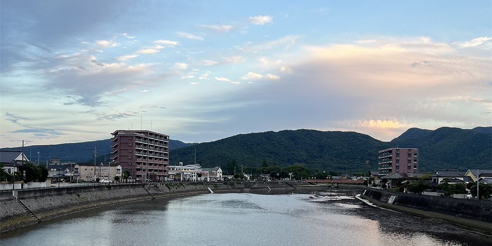
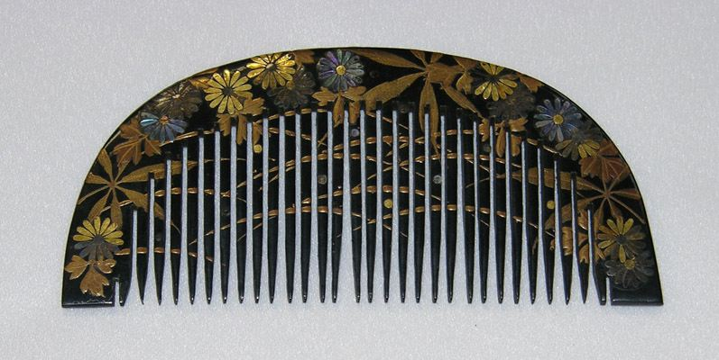
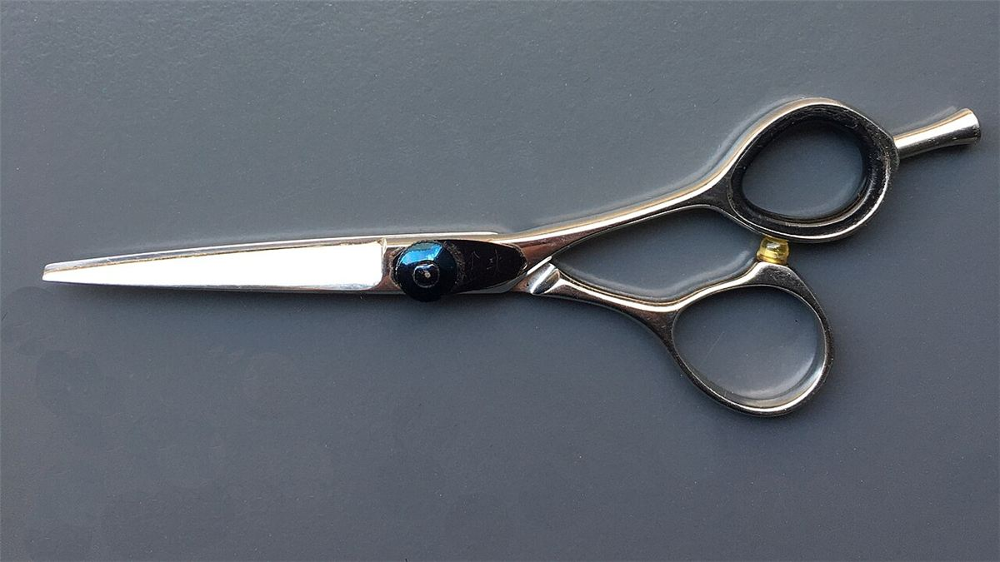
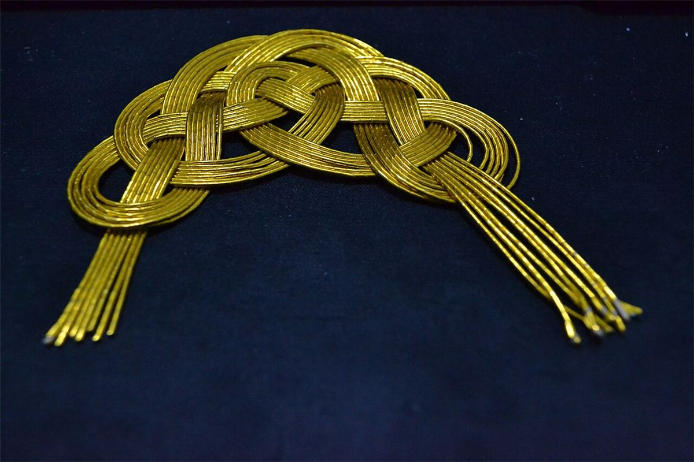
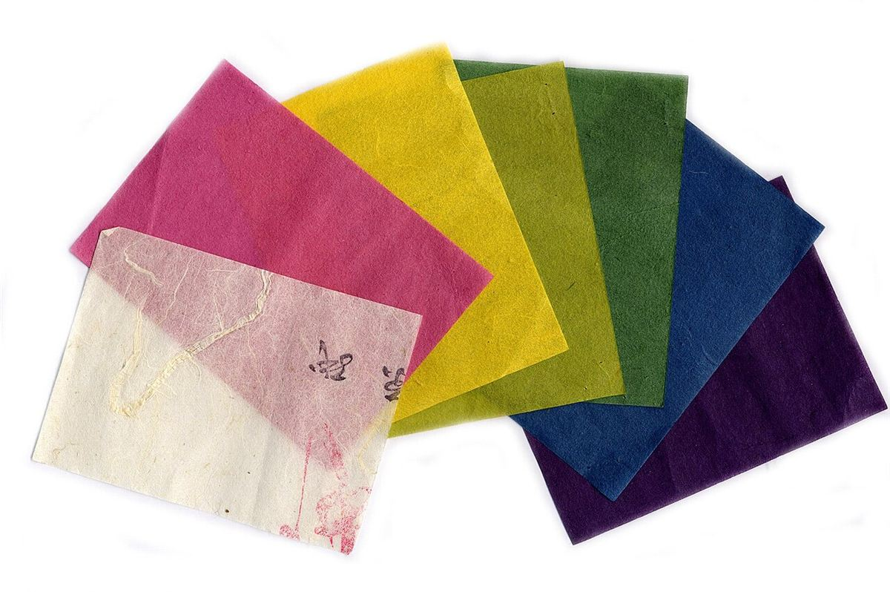
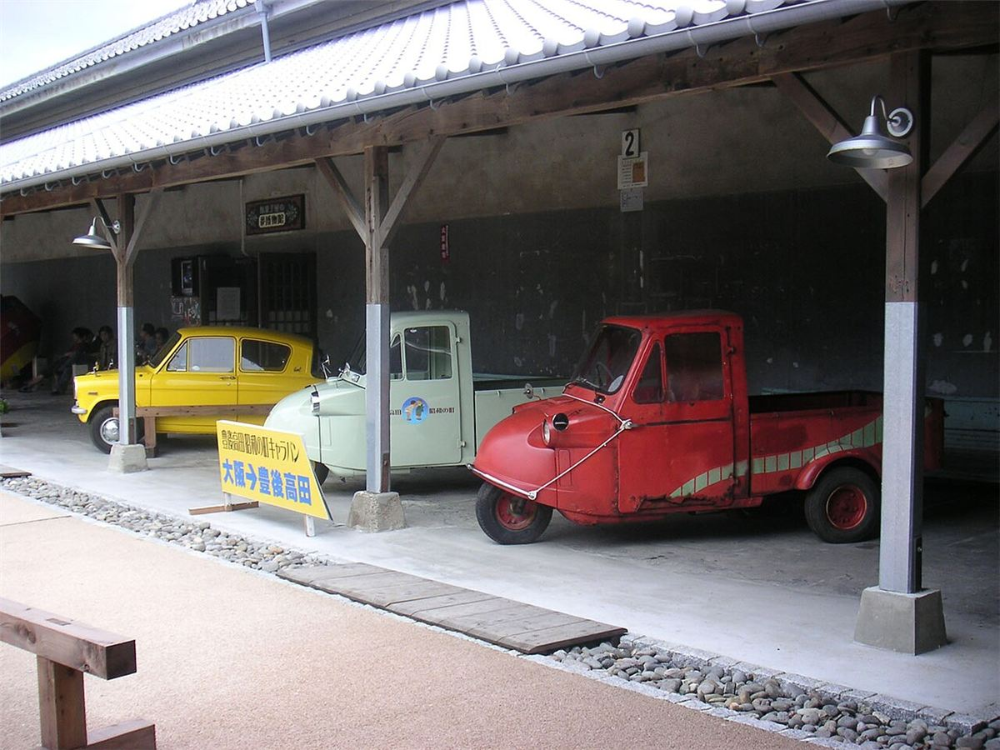
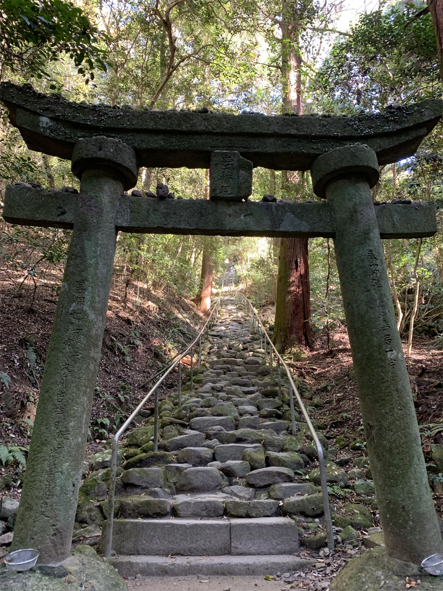
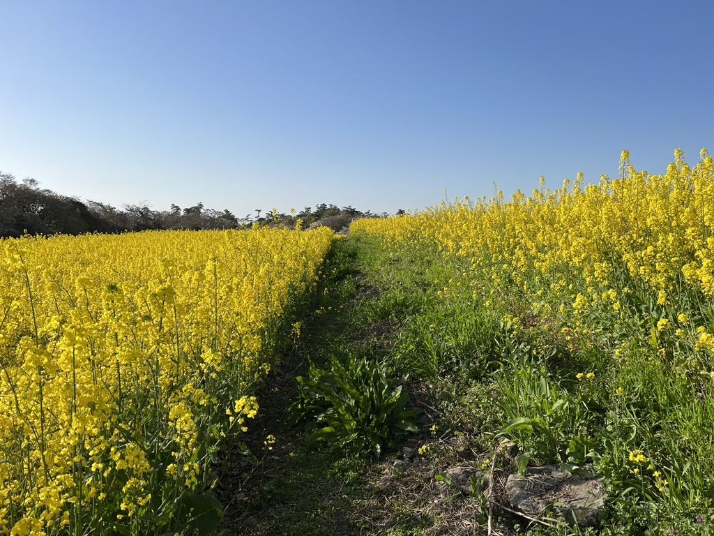
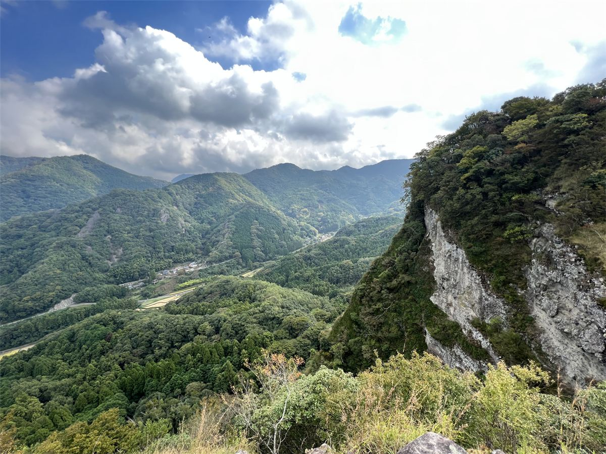

髪を結う、町の美容室。
大分県豊後高田市 髪結屋 心
大分県豊後高田市新町にある美容室です。ご相談は、お電話またはInstagramからどうぞ。
ご案内
知りたい内容の札をお選びください。
手仕事のイメージ
素材写真です。実際の店内・施術の様子とは異なります。

イメージ
イメージ
イメージ
イメージ素材写真です。お店の備品や施術内容を示すものではありません。
ご来店まで
まずはお電話またはInstagramでご連絡ください。
ご連絡
お電話またはInstagramでお問い合わせください。
ご相談
ご希望やご不明点をお伝えください。
ご来店
ご予約の方法など詳細は、準備中（お問い合わせください）
豊後高田・大分の景色
豊後高田・大分の景色(イメージ)。一部は撮影地が異なる場合があります。



